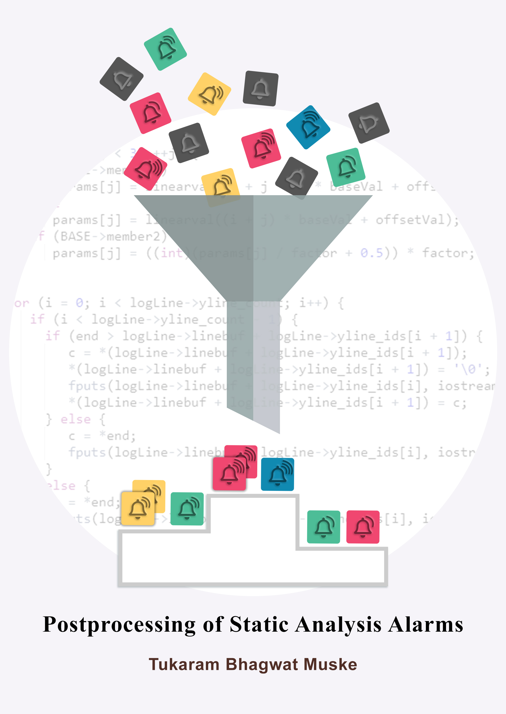

 I completed my PhD degree from Eindhoven University of Technology (TU/e), The Netherlands, under the supervision of Prof. Dr. Alexander Serebrenik and Prof. Dr. M.G.J. van den Brand.
Thesis title: Postprocessing of static analysis alarms
Thesis defense date: July 7, 2020.
The PhD thesis can be found here.
The presentation/slides used to defend the thesis can be found here.
I completed the degree while working as a scientist at TRDDC (TCS) between 2016 and 2020. During this period, I got opportunity to visit Eindhoven University of Technology (TU/e) five times, each visit being for the duration of around a month, and host twice Prof. Dr. Alexander Serebrenik for his sabbatical at TRDDC, each sabbatical visit spanning over a couple of weeks.
Software systems are playing crucial role in our life. Ensuring that these software systems are free of defects is of utmost importance. Despite the common use of software testing in detecting defects, it can be used only to show the presence of bugs, but never to show their absence. This well-recognized limitation of testing led to emergence of alternative automated program analysis technique called static analysis. Considering the usefulness of static analysis in detecting defects, a wide range of static analysis tools have been developed. These tools, however, due to several unavoidable reasons generate a large number of alarms that are warning messages to the user. A high percentage of alarms are falsely generated and identifying them requires manual inspection.
In this thesis, we addressed the problem of falsely generated alarms by improving postprocessing of alarms, i.e., processing the alarms after they are generated. The postprocessing is used to reduce their number or the effort required to manually inspect them. We first reviewed the techniques that have been proposed for postprocessing of alarms and identified the areas of improvement. We then designed a series of postprocessing techniques and evaluated them on multiple industrial and open source systems. Our techniques improved the approaches used to (1) group similar alarms, (2) eliminate false alarms automatically, (3) suppress alarms generated on evolutionary code, and (4) inspect alarms generated on partitioned-code. Our evaluation results show that the proposed techniques reduce the number of alarms by up to 36% and the time required for automated false positives elimination by up to 60%.
 Tukaram Muske
Tukaram Muske